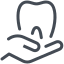

Ortodoncia y Ortopedia
Ver más

La ortodoncia es la rama dentro de la odontología que se dedica a la corrección de
la malposición dentaria mientras que la ortopedia se encarga de guiar el crecimiento y
desarrollo de los maxilares. La ortodoncia puede ser realizada a cualquier edad en cambio
la ortopedia es realizada en pacientes en crecimiento (durante la niñez o la adolescencia).
Ambos tratamientos se complementan.